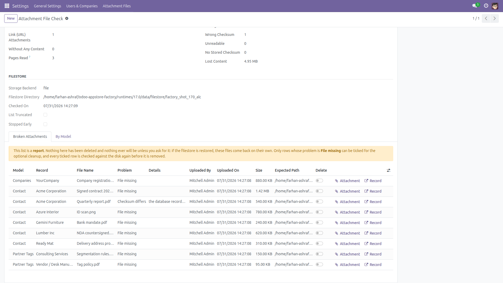
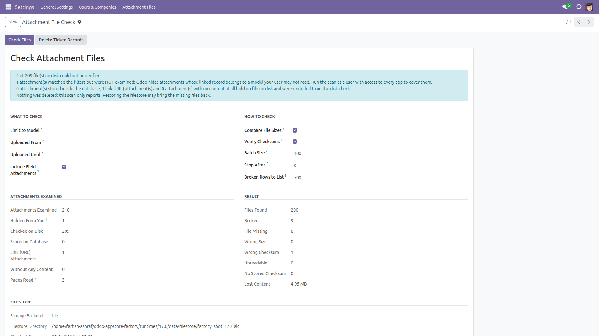
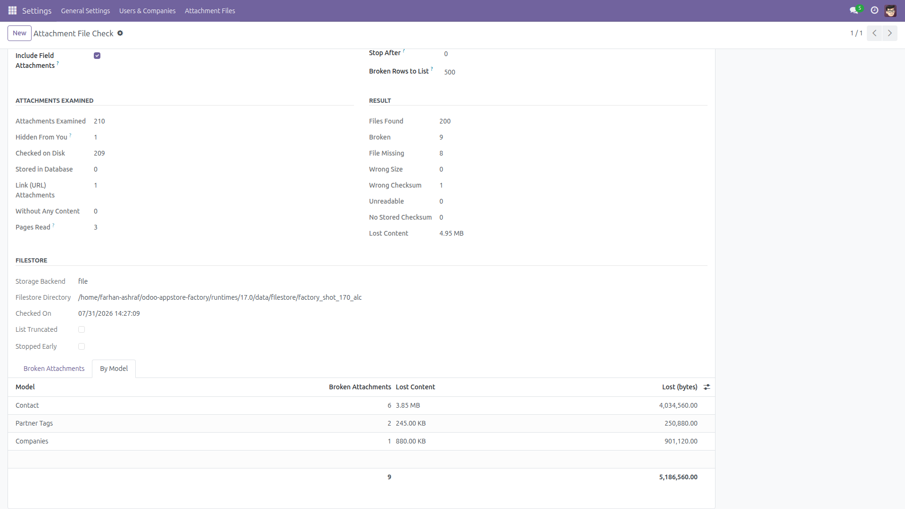
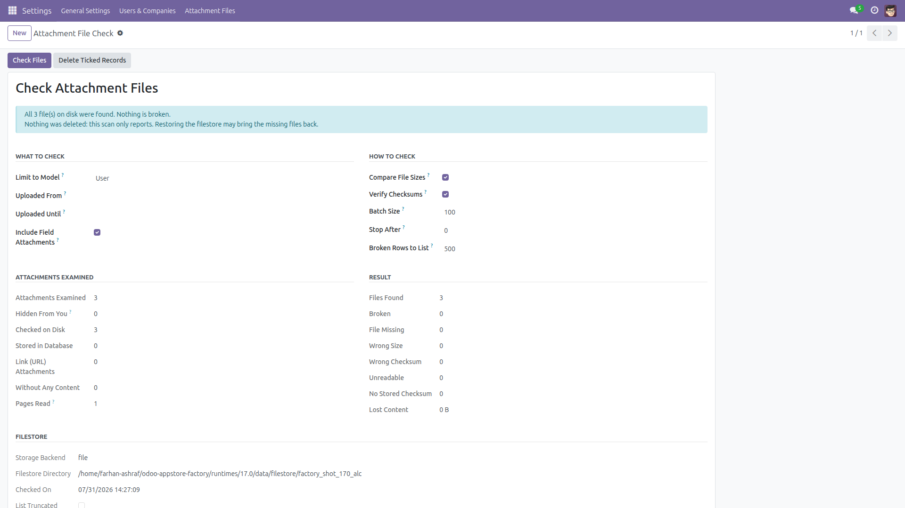

Check Attachment Files
Find the attachments whose file is gone — before a user does.
A database restored without its filestore, a half-finished migration, a backup that only covered PostgreSQL: the rows in ir.attachment survive, the files behind them do not. Odoo says nothing about it. The damage surfaces months later, when somebody clicks Download and gets an error.
This module adds an administrator scan that walks the filestore-backed attachments, checks that each file really exists, and reports what was lost — grouped by model, with the record, the owner, the date and the exact path that could not be read.
Free and open source (LGPL-3), Odoo 14.0 through 19.0.
- Missing files — every attachment whose file is not on disk any more, with the filestore path it points at.
- Wrong size — files whose size on disk no longer matches the size recorded in the database.
- Wrong checksum — an opt-in deep check that recomputes each file's SHA1 and catches silent corruption, even when the size did not change.
- Grouped by model — see at a glance whether you lost contact documents, company files or stored reports, and how much content each model lost.
- Who and when — every broken row shows the record it belonged to, the user who uploaded it, the upload date and the size.
- Batched — the attachment table is read a page at a time, so the scan uses the same memory on a database with a thousand attachments and one with a million. The number of pages read is shown on the report.
- Filters — restrict to one model, to an upload period, or to user uploads only; stop the scan after N attachments; cap the detailed list (the counts always cover the whole scan, and the page says when the list was truncated).
- Report only — nothing is ever deleted automatically. See the box below.
What this module never does. It never deletes an attachment on its own. The scan itself never reads, writes or deletes a file — with checksum verification off it does not open a single one, and with it on it only reads. A missing file is usually recoverable: restoring the filestore brings it straight back, and a scan that had deleted the database rows would have thrown that recovery away.
There is an optional cleanup for the case where you know the files are gone for good: you tick individual rows, confirm an explicit dialog, and only those records are removed. It refuses any row whose file is still on disk, it re-checks the disk immediately before deleting so a restore that happened since the report can never be undone, it refuses rows that are the value of a binary field on a record, and it deletes with your own access rights rather than as superuser. Deleting rows makes Odoo enqueue their (already missing) filestore entries for its standard garbage collector — no file content is removed by this module, and core skips any file still referenced by another attachment.
Honest limitations. The scan only sees what your user is allowed to see. Odoo removes from every attachment search the attachments whose linked record belongs to a model the current user has no access to, so a Settings administrator who does not also hold the Accounting or HR groups would never be shown a broken invoice PDF. Rather than leave that gap silent, every report counts the attachments it was not allowed to examine and says so, in the summary (Hidden From You) and in the result note — run the scan as a user with access to every app to bring that number to zero.
Only attachments backed by the filestore can be checked on disk: attachments stored inside the database (db_datas) and link/URL attachments hold no file, so they are counted separately and excluded, and they appear in the summary so the numbers always add up. The scan reads the local filesystem through Odoo's own path resolution, so it follows a custom filestore location; if a third-party module stores attachment content somewhere else entirely (S3 and similar), that content is outside what this module can verify. Checksum verification needs a checksum stored on the attachment; rows that have none are reported as such instead of being silently passed, and size comparison is skipped for rows whose recorded size is zero. With checksums on, the scan reads the whole filestore inside one web request — combine it with Stop After on a very large filestore. Access is restricted to the Settings group because the report exposes filestore paths and file names across the whole database.
Screenshots

Every attachment whose file is missing, with its record, owner, date and the exact filestore path that could not be read.

What was examined and what was found, the filters used, and the filestore the scan looked in.

The same broken attachments summarised per model, with the content each model lost.

A scan that found nothing wrong says so plainly, instead of leaving you guessing.
Installation
- Copy the
attachment_link_checker folder into your addons path (or install it from the Apps store).
- Open Apps, click Update Apps List, search for Check Attachment Files and click Install.
- No external Python library and no other module is required — it only depends on
base.
Configuration
- There is nothing to configure. The scan works on the attachments already in your database.
- Access is limited to the Settings group (Administration: Settings). Give that group to anyone who should be able to run the scan.
- Run the scan as a user who has access to every app. Odoo hides attachments whose linked record belongs to a model the user may not read; the report tells you how many were hidden (Hidden From You), and that number should be zero.
- The scan reads the filestore of the machine it runs on. On a multi-server setup, run it on a server that has the filestore mounted, or the files will look missing when they are not.
- In multi-company databases only the companies currently selected in the company switcher are examined.
Usage
- Go to Settings → Attachment Files → Check Attachment Files. The scan runs immediately with the default options.
- Read the summary: how many attachments were examined, how many were checked on disk, how many are broken, and how much content was lost.
- Open the Broken Attachments tab for the detail — model, record, file name, problem, uploader, date, size and the path the file should be at. Use Attachment or Record on a row to jump straight to it.
- Use the By Model tab to see which models were hit hardest.
- To go deeper, tick Verify Checksums and click Check Files again. This reads every byte of every file, so it is slow on a large filestore — but it is the only way to catch a file that was corrupted without changing size.
- Narrow the scan with Limit to Model, Uploaded From/Until or Include Field Attachments, and control the cost with Batch Size, Stop After and Broken Rows to List.
- Restore your filestore and run the scan again — the recovered files disappear from the report by themselves.
- Only if the files are gone for good: tick Delete on the rows you want to drop and click Delete Ticked Records. A confirmation dialog appears, the disk is checked once more, and only the ticked dangling records are removed.
Version notes
Identical features and identical results on every supported series (14.0 – 19.0). The number of pages reported is a property of each series' ORM paging and is not comparable between them.
License: LGPL-3 · Source on GitHub · Issues and contributions welcome.